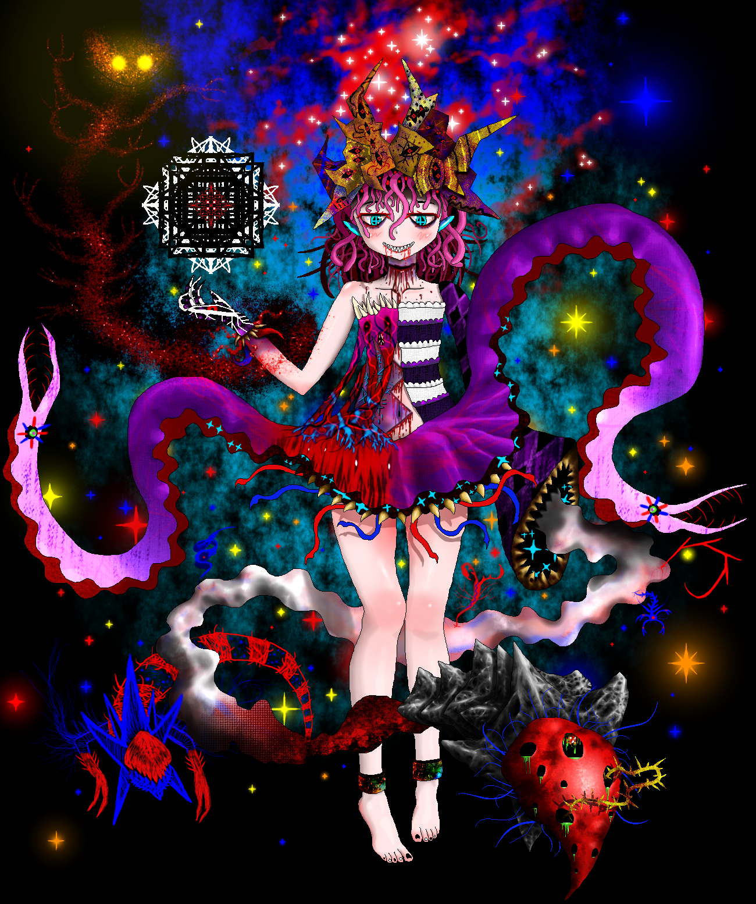
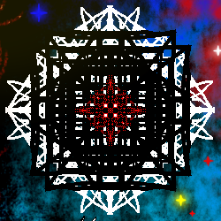
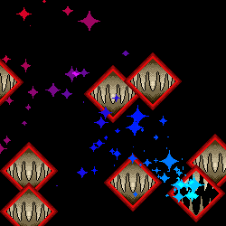
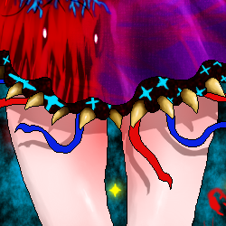

-
Tae is the “Keeper of Stillborn Thoughts,” and also a thought of Ariph, the Final Arcent. Tae was thought upon and created with this special title in mind, and was one of the first thoughts Ariph pulled from her body after her ascension. As such, Tae is filled with thoughts from the very beginning of Ariph’s reign. It is not uncommon for fools to misattribute a Tae sighting with a sighting of the Final Arcent, due to Tae’s ability to command so many thoughts and having a similar stature to the Final Arcent.
Those who make the mistake of calling Tae an Arcent do not usually live to tell the tale. Such disrespect to her mistress demands retribution...
Tae’s reason for being is immortalized within her title: she is tasked with safekeeping and refining all thoughts formed half-way and part-way by the Final Arcent. Though these thoughts in her care are “stillborn,” they are potent and brimming with potential. They are thoughts of Ariph, after all...
While testing the mettle of this Terminal Supercluster, Tae uses the power of only one of her eyelashes to do so. As such, her attacks could be readily compared to “Touhou spellcards.” Tae levels the playing field so that even a lowly probe can survive an encounter, and makes what would normally be a “completely one-sided affair” “somewhat fair.” However, restraint can only dampen her powers so far, and unlike “Touhou spellcards,” these attacks will still annihilate a probe if the attack connects. The restraint only applies to not entirely annihilating the Terminals the “fight” is taking place in.
Listed below are the three main “spellcards” she utilizes during this test:
"Sigil of Stillborn Thoughts"

This sigil is imbued with the untapped potential of thoughts formed half-way and part-way. Meandering ideas are given focus and purpose, and will light the way.
"Sight beyond EyeSSS"

This sight is given clarity by the Last Arcent, and will tear through any obstruction.
"Skirt Secrets"

Beneath this fluttering skirt hides a girl's most guarded secrets. Curiosity is ill advised here...
-
Back.